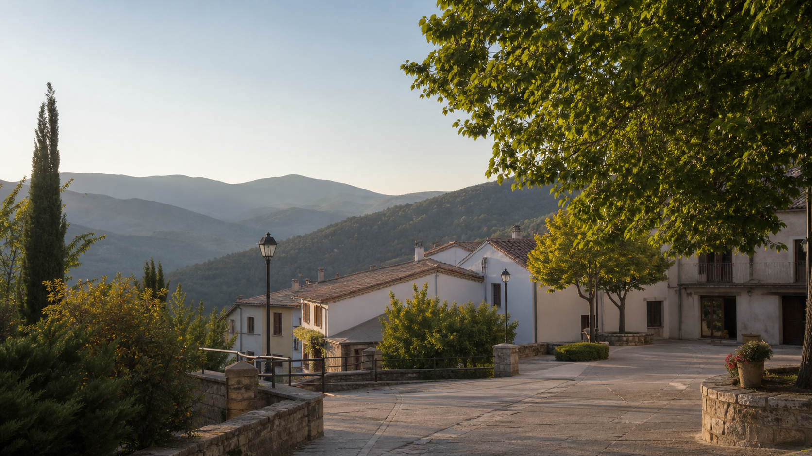
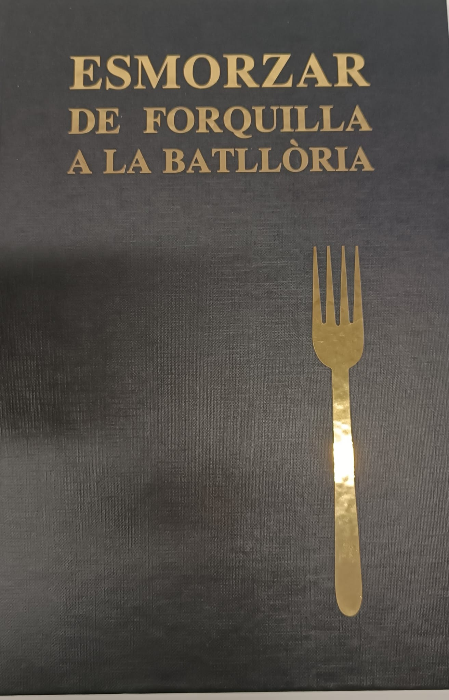

Plataforma ciutadana - 2026
La Batllòria, poble amb veu pròpia
Una iniciativa veïnal nascuda per preservar la identitat, ordenar la memòria històrica i estudiar amb rigor el futur administratiu del poble.
Navegació clara
Tria per on vols continuar
Hem separat la web en apartats més curts per fer-la més còmoda, més ordenada i més fàcil de compartir.
Projecte i identitat
Qui som, objectius, principis, història i mètode de treball.
02Trobades i galeria
Esmorzars, fotografies, recorreguts i activitat pública.
03Entrevistes
Clips destacats i frases clau de les converses realitzades.
04Documents i suport
Full de ruta, arxiu, preguntes freqüents i formulari de suport.

Activitat recent
Esmorzars de forquilla per escoltar i explicar el poble
Les trobades amb representants institucionals jubilats permeten compartir la realitat de La Batllòria en un ambient proper, tranquil i orientat a l'experiencia.
Veure les trobadesEntrevistes
"Les batalles que es perden són les que es donen per perdudes."
Un dels fragments destacats de l'entrevista amb Artur Mas, seleccionat per transmetre constancia, respecte i confiança en el treball veinal.
Veure els clips